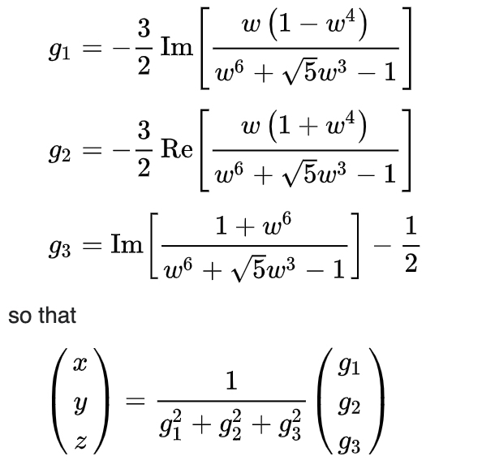

Boy's surface is a one-sided surface in three-dimensional surface (or in mathematical jargon, an immersion of the real projective plane in R3) that was discovered by Werner Boy, a student of David Hilbert, in 1902.

To render this lovely shape, we're going to use the Bryant–Kusner parametrization:
In each case, w is a complex number where the absolute value of w is less than or equal to one (|w| ≤ 1):
We begin our geometry-generation with some usual imports. The cmath package is included for dealing with complex numbers.
import bpy
import cmath
import mathNext, we'll set up some functions for calculating the Cartesian x, y, and z positions for each vertex. Here, z is the complex number described above:
def g1(z):
k = (z * (1 - z ** 4)) / (z ** 6 + math.sqrt(5) * z ** 3 - 1)
return -3/2 * k.imag
def g2(z):
k = (z * (1 + z ** 4)) / (z ** 6 + math.sqrt(5) * z ** 3 - 1)
return -3/2 * k.real
def g3(z):
k = (1 + z ** 6) / (z ** 6 + math.sqrt(5) * z ** 3 - 1)
return k.imag - 1/2
def g(z):
return g1(z) ** 2 + g2(z) ** 2 + g3(z) ** 2
def X(z):
return g1(z) / g(z)
def Y(z):
return g2(z) / g(z)
def Z(z):
return g3(z) / g(z)Next, the actual mesh generation. Note that the restriction |z| ≤ 1 makes the choice of polar coordinates natural:
r_divisions = 32
phi_divisions = 64
verts = []
faces = []
def vertex(r, p):
""" Create a single vertex """
radius = 1.0 / r_divisions * r
phi = 2.0 * math.pi / phi_divisions * p
z = cmath.rect(radius, phi)
return (X(z), Y(z), Z(z))
verts = [vertex(r, p) for r in range(r_divisions) for p in range(phi_divisions)]
def face(r, p):
""" Create a single face """
v1 = r * phi_divisions + p
v2 = (r + 1) * phi_divisions + p
v3 = (r + 1) * phi_divisions + 1 + p
v4 = r * phi_divisions + 1 + p
return (v1, v2, v3, v4)
faces = [face(r, p) for r in range(r_divisions-1) for p in range(phi_divisions - 1)]Finally, to generate the mesh:
name = 'Boys Surface'
# Create Mesh Datablock
mesh = bpy.data.meshes.new(name)
mesh.from_pydata(verts, [], faces)
# Create Object and link to scene
obj = bpy.data.objects.new(name, mesh)
bpy.context.scene.collection.objects.link(obj)Two important notes:
- There will be two seams left in the mesh which have to be joined by hand, simply by selecting the edges and creating new faces. I found this simpler than trying to find which vertex indexes would eventually align as the mesh curves back and self-intersects.
- Since this is a single-sided surface, there are seams where the normals are all weird ¯_(ツ)_/¯
Here's the final result (with subsurf applied):
Download the blender file if you'd like to take a look around or use it in one of your projects.
Questions or comments? Email sean@inform.studio.